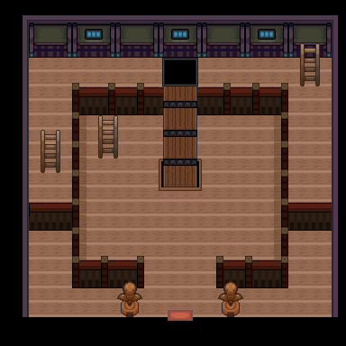

027 痛苦的大食花
一句话目标：前往桔梗市树海深处，把失控痛苦的大食花解救出来。
接取地点
- 喇叭芽之塔（地图 1:88），塔内 (16,10) 的僧侣（
local_id 5）。承接 026 的同一人物。 - 当前目录描述：前往桔梗市树海的深处，将大食花从痛苦中解救出来。
准备条件
- 完成任务 026《修行的难题》，并在完成时与僧侣交换了电话号码（他承诺“喇叭芽修行有了成果会打电话通知你”）。
- 需接到僧侣来电后回塔对话才能接取（触发旗标 3179，置位脚本未定位）。
- 会冲浪：树海“需要在通往塔的桥边使用冲浪游到对岸的陆地才能到达”（对白明示）。
操作步骤
- 完成 026 并登记电话号码后，等待僧侣来电（游戏中表现为他通知喇叭芽进化后失控）。
- 回喇叭芽之塔与僧侣 (16,10) 对话，他说喇叭芽已进化成大食花却突然狂躁、逃往塔后树海深处，拜托你去解救。选择答应后出现“接受任务:<痛苦的大食花>”。
- 他提示“喇叭芽之塔后面的那片树海……光靠步行是走不过去的。需要在通往塔的桥边使用冲浪游到对岸的陆地才能到达”。
- 从塔通往塔后的桥边使用冲浪渡水，到达 桔梗市（地图 3:68） 北侧树海区域约 (32,8) 处，大食花（对象
local_id 42）出现。 - 触发场景：与野生大食花（71，Lv28，携带博识眼镜）战斗。战后大食花冷静下来“似乎回到了喇叭芽之塔……”，剧情把“超级大食花的波动”储存在超级石中。
- 回喇叭芽之塔与僧侣对话，他致谢并给报酬，完成任务。
交付检查
- 完成树海救援（旗标 3127 置位）后回塔找僧侣即可领赏；只接了任务未救回时，僧侣只会重复“树海……需要冲浪”的提示。
奖励
- 光之黏土 ×1
- 10000 元
- 8 BracerPoints
容易卡住的位置
- 树海必须用冲浪从塔边桥旁渡水过去，步行无法抵达。
- 树海救援场景是野生大食花战斗（
setwildbattle），脚本只证明对战设置，不保证一定能捕捉。 - 必须先在 026 完成时登记电话号码；未登记则僧侣只会再次请求交换号码。
来源与待补
- 包：
data/quest_packets/027.json；接取脚本0x08EECE13、0x08EEC9AC；奖励脚本0x08EECAE3、0x087B217F；入口脚本0x08F50432（map 1:88 / local_id 5）。 - 树海救援脚本
0x08EECE52属map 3:68 / local_id 42（不在本包脚本清单内，经旗标 3127 关联）。 - 相关宝可梦：大食花；相关道具：光之黏土、博识眼镜。
- 未定位：触发 027 可接取的旗标 3179 的置位来源（疑为电话事件）；“超级石”对应的道具或变量（脚本
setvar 20544,1）；树海救援场景的完整对白文本（0x089E7CC2、0x089E7D54未提取）。
地点地图
共享RGB底图；点击可缩放定位。数字对应本页相关地点，不代表地图上全部事件。
喇叭芽之塔

1 痛苦的大食花（16,10）
桔梗市


1 痛苦的大食花（32,8）